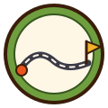
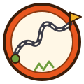
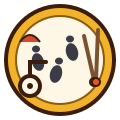
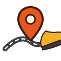

BiegaMy · bieg wirtualny
WKRÓTCEPRÓBA
Bieg i marsz dla jednej zbiórki. Pobiegnij albo przejdź swój dystans tam, gdzie mieszkasz. Udział bezpłatny.
Zaloguj się, żeby się zapisać ›
Zapis wymaga konta BiegaMy (własne konto od 16 lat). Dziecko dopisuje rodzic z własnego konta, samym imieniem. Udział jest bezpłatny.
Zapisy na ten bieg są zamknięte.
Bieg jest w przygotowaniu. Zapisy ruszą niebawem.
Dystanse

5 kmbieg albo marsz
10 kmdla tych, którzy lubią dłużej
Dzieciswój dystans, bez czasuZapis na 5 km, a zrobione 10? Dyplom na 10. Wynik wchodzi z zegarka (jak każdy trening w BiegaMy) albo wpisujesz go sam, do dwóch dni po biegu.
Twój bieg
Wesprzyj zbiórkę (dobrowolnie)
Razem
Jak to działa
1. Zapisz sięDystans 5 albo 10 km, imię na numer i dyplom. Dzieci dopisujesz samym imieniem.
2. Jeśli chcesz, wesprzyj zbiórkęBezpośrednio u organizacji prowadzącej zbiórkę. BiegaMy nic nie przyjmuje.

3. Pobiegnij albo przejdź dystans w weekend bieguGdziekolwiek. Z zegarkiem albo bez: wynik dopisujesz do dwóch dni po biegu.
4. Odbierz dyplom i odznakęKto ukończy, ma dyplom i odznakę biegu. Twoje kilometry liczą się też do ulicy.